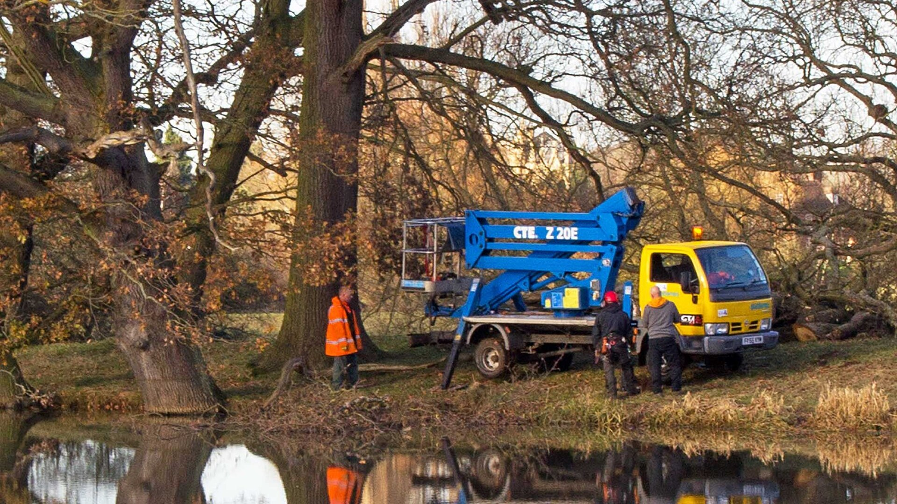
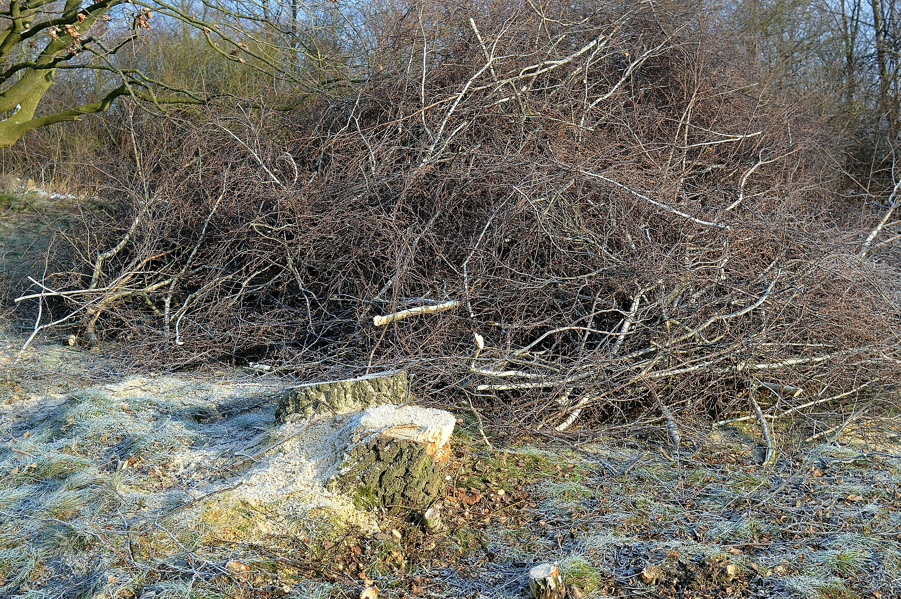
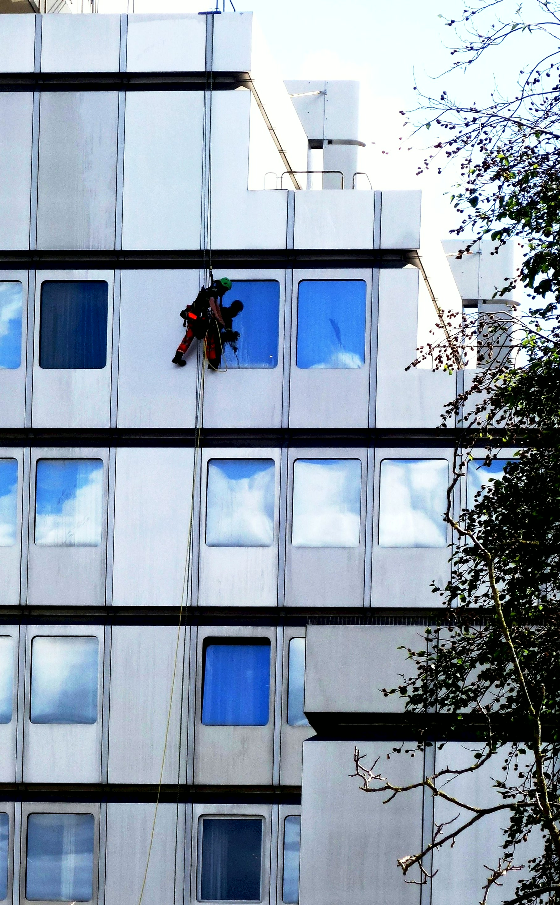

Drzewa i elewacje bez rusztowania
Wycinamy i przycinamy drzewa, także te rosnące tuż przy domu, płocie albo linii. Myjemy elewacje.
Zadzwoń teraz +48 602 474 496- Bezpłatna wycena
- Dojazd: Wałcz i okolice
- Gwarancja na robociznę
Wiesz, na czym stoisz - na każdym etapie
Od pierwszego telefonu do odbioru roboty - krok po kroku.
- 01
Telefon
Mówisz, co jest do zrobienia: drzewo do wycinki, konary nad dachem albo elewacja do umycia. Umawiamy dzień oględzin.
- 02
Oględziny i wycena
Przyjeżdżamy, oglądamy miejsce i dojazd dla podnośnika. Podajemy cenę przed rozpoczęciem prac.
- 03
Praca
Zabezpieczamy otoczenie, rozstawiamy podnośnik albo drabiny i robimy swoje.
- 04
Porządek i odbiór
Zabieramy gałęzie, zostawiamy teren w porządku i oglądamy efekt razem z Tobą.
Jak pracujemy
Wycinka, cięcie w koronie drzewa, praca z podnośnika i mycie elewacji. Tak wygląda nasza praca na co dzień.




Zakres usług
Zakres prac, jaki robię najczęściej - pełny opis i wycenę znajdziesz niżej.
- Wycinka drzewWycinamy drzewa w całości albo kawałkami, od góry, gdy obok stoi dom, garaż albo płot.Wycena →
- Przycinanie i cięcie koronySkracamy konary nad dachem, odcinamy suche i połamane gałęzie, przerzedzamy koronę.Wycena →
- Prace z podnośnika koszowegoMamy własną zwyżkę. Z kosza dochodzimy do korony wysokiego drzewa, rynny, szczytu dachu czy elewacji bez stawiania rusztowania.Wycena →
- Mycie elewacjiZmywamy zielony nalot, glony, kurz i zacieki ze ścian domów i budynków.Wycena →
- Prace na wysokościDrabiny w trzech długościach i podnośnik pozwalają nam dobrać sprzęt do miejsca.Wycena →
- Gałęzie i drewnoPo wycince zabieramy gałęzie albo układamy drewno na posesji, tak jak ustalimy przy wycenie.Wycena →
Co mówią klienci
Zadzwoń i umów oględziny. Na miejscu powiemy, jak poprowadzimy pracę przy Twoim drzewie albo elewacji.
Dojeżdżamy do Ciebie
Wałcz i okolice to nasz teren. Zadzwoń i powiedz, gdzie jest drzewo albo budynek, ustalimy termin oględzin.
- Wałcz
- + okolice
Drzewo przy domu albo brudna elewacja? Umów oględziny.
Napisz, co jest do zrobienia - obejrzymy na miejscu i wycenimy. Bez zobowiązań.